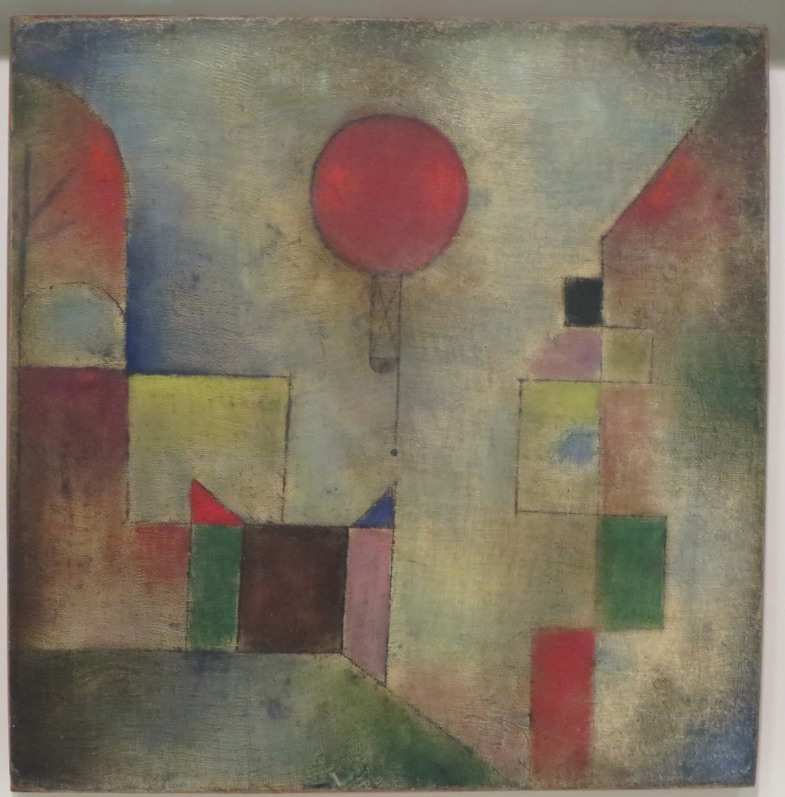

红气球 / Red Balloon · 1922 · Paul Klee
一枚红圆，让安静的城镇有了呼吸。
下方矩形聚拢；中央留空。圆与方，让“上升”可见。
低纯度红绿近互补；气球以相对较高纯度跳出。
浅色似乎从内部发亮；并无一致的写实光源。
练习用编辑配色，非原作精确取样。
油彩与施白垩底纱布。油彩转印线描尚有疑问。
Paul Klee（1879—1940）。1921—1931 年在包豪斯任教。
红圆似乎想离开，细线仍牵着它。轻盈，也可以带着牵挂。
暖纸白 70%＋灰绿 20%＋砖红 8%＋深褐 2%。
色值见第 2 张。圆周留半径宽空隙；缩成小图，检查第一眼焦点。
配色为编辑练习建议，非原作取样。
《红气球》 · Paul Klee · 1922Solomon R. Guggenheim Museum, New York
图像来源：Wikimedia Commons / Red Balloon.JPG。版权归原作者及相关权利人；文件标记为公有领域（PDM）。赏析为独立观点。